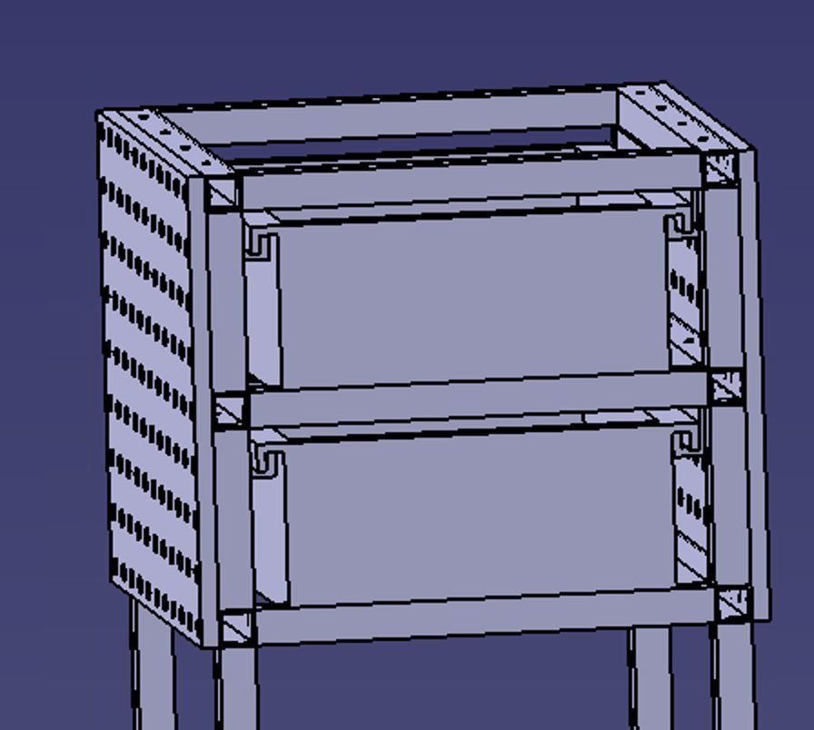

🏗️ Etagen-Übersicht
1️⃣ Etage 1
Freier Platz für Schweißmaschine / Bestandswagen + Fixationssystem.
2️⃣ Etage 2
Schublade.
3️⃣ Etage 3
Schublade (identisch zu Etage 2).
4️⃣ Etage 4
Oberer Deckel + seitliche Lochwände.
Vorteil des Etagenkonzepts:
Modularität (jede Etage ist eine eigene Baugruppe, getrennt konstruierbar und fertigbar)
· Wiederholteile (Etage 2 und 3 sind identisch → nur eine Konstruktion,
doppelte Stückzahl) · Änderungsfreundlich (Etagen später ergänz- oder tauschbar)
· Fertigung in kleineren, handhabbaren Schweiß-/Montagegruppen.
1️⃣ Etage 1 – Aufnahme für Maschine / Bestandswagen
Etage 1 in vier Ansichten

Offener Rahmen – eine Seite bleibt frei (U-förmig), der Bestandswagen fährt von dort ein. Auf der Rückseite mehrere waagerechte Querriegel zur Aussteifung.
Offener Punkt – Fixationssystem: Das Fixationssystem ist im Text
genannt, aber in den Ansichten nicht dargestellt. Zu klären: Wie wird der Bestandswagen
arretiert (Anschlag, Bolzen, Klemme, Rastung)? Wird er nur positioniert oder auch gegen
Herausrollen gesichert? Muss die Fixierung werkzeuglos bedienbar sein?
2️⃣3️⃣ Etage 2 & 3 – Schubladenetagen
Zusammengesetzte Baugruppe: Etagen 2–4

Zwei Schubladenebenen mit sichtbaren Führungsschienen, oberer offener Rahmen als Ablage, seitlich angehängte Lochwand über die gesamte Wagenbreite.
| Merkmal | Ausführung |
|---|---|
| Bauform | Rechteckige Blechwanne mit umlaufendem Profilrahmen |
| Führung | Seitliche Auszugsschienen (als C-Profile erkennbar) |
| Wiederholteil | Etage 2 und 3 identisch → 2× dieselbe Baugruppe |
| Rahmenanbindung | Über Profilrahmen an den Ständern verschraubt |
Zwei Abweichungen vom Lastenheft:
(1) Ursprünglich war ein fertiger Schubladenblock als Zukaufteil vorgesehen (A-04) –
hier werden die Schubladen nun als Eigenkonstruktion ausgeführt. Vorteil: Maße passen
exakt zum Rahmen. Nachteil: höherer Konstruktions- und Fertigungsaufwand.
(2) Das Lastenheft nennt drei Schubladen, das gewählte Konzept sieht nur zwei vor
– zu prüfen, ob der Stauraum ausreicht.
4️⃣ Etage 4 – Deckel und Lochwände
| Festlegung | Beschreibung | Konstruktive Folge |
|---|---|---|
| Nur ein Deckel oben | Obere Etage wird als Deckel/Ablage ausgeführt | Vereinfachung gegenüber Version 1 |
| Lochwand seitlich | Lochwände werden an der Seite angehängt – nicht umlaufend fest verbaut | Demontierbar, austauschbar |
| Breite der Lochwand | Entspricht der Breite des Wagens | Maßbezug zum Rahmen |
| Höhe der Lochwand | Entspricht der Höhe der 2 Schubladen | Maßbezug zu Etage 2+3 |
Gut gelöst: Die Lochwandmaße sind relativ definiert (Wagenbreite × Höhe
der zwei Schubladenetagen). Dadurch passt sich die Wand automatisch an, wenn sich die
Rahmenmaße noch ändern – ein sauberer parametrischer Ansatz.
🔧 Bauweise – Profilsystem oder Schweißkonstruktion?
Alle Etagen sind in den CAD-Modellen erkennbar aus Nutprofil (Item-Aluprofil) aufgebaut – mit Eckverbindern und Nutensteinen, nicht geschweißt. Damit wäre faktisch Variante A aus dem Schriftfeld von SW-001 gewählt.
| Kriterium | Variante A: Item-Aluprofil | Variante B: Stahl geschweißt |
|---|---|---|
| Fertigung | Sägen + Schrauben, keine Schweißnähte | Zuschnitt + Schweißen + Richten |
| Änderbarkeit | ✅ Sehr hoch – lösbar, umbaubar | ❌ Gering |
| Gewicht | ✅ Leichter (Aluminium) | Schwerer |
| Materialkosten | ❌ Höher (Profil + Verbinder) | ✅ Niedriger (Kantrohr) |
| Fertigungszeit | ✅ Kürzer | Länger |
| Werkstattkompetenz | Montage | ✅ Kernkompetenz des Betriebs (Metallbau) |
| Steifigkeit | Gut bei richtiger Verbindertechnik | ✅ Sehr hoch |
Für den Bericht: Genau dieser Vergleich ist die von der Hochschule
geforderte „technisch-wirtschaftliche Gegenüberstellung: Item-Profile vs. normale
Werkbank“. Beide Varianten liegen vor – es fehlt nur noch die Kostenaufstellung.
Wie der Zeichnungssatz auf Seite 10 zeigt, wurde am Ende tatsächlich Stahl ausgeführt.
🚨 Kritische Punkte dieses Konzeptstands
| # | Punkt | Hintergrund |
|---|---|---|
| 1 | Wo bleibt die Gasflasche? | Im 4-Etagen-Konzept ist keine Gasflaschenaufnahme vorgesehen. Zu klären: Bleibt die Flasche auf dem Bestandswagen (Etage 1) oder braucht sie eine eigene Halterung? |
| 2 | Erdung bei Aluprofil-Bauweise | Nutprofile sind oft eloxiert – die Oxidschicht ist elektrisch isolierend. Für eine sichere Masse-/Erdungsverbindung (A-13) sind gezielte Kontaktstellen nötig. Bei geschweißtem Stahl entfällt dieses Problem. |
| 3 | Weiterhin keine Bemaßung | Auch dieses Dokument enthält keine Maße. Für Fertigung, Stückliste und Kostenvergleich sind Hauptmaße zwingend erforderlich. |
| 4 | Hitzebeständigkeit | Am Schweißplatz fallen Funken und heiße Schlacke an. Aluminium schmilzt bei ca. 660 °C, Stahl deutlich später. Prüfen, ob Ablageflächen im Funkenflugbereich aus Stahlblech ausgeführt werden sollten. |